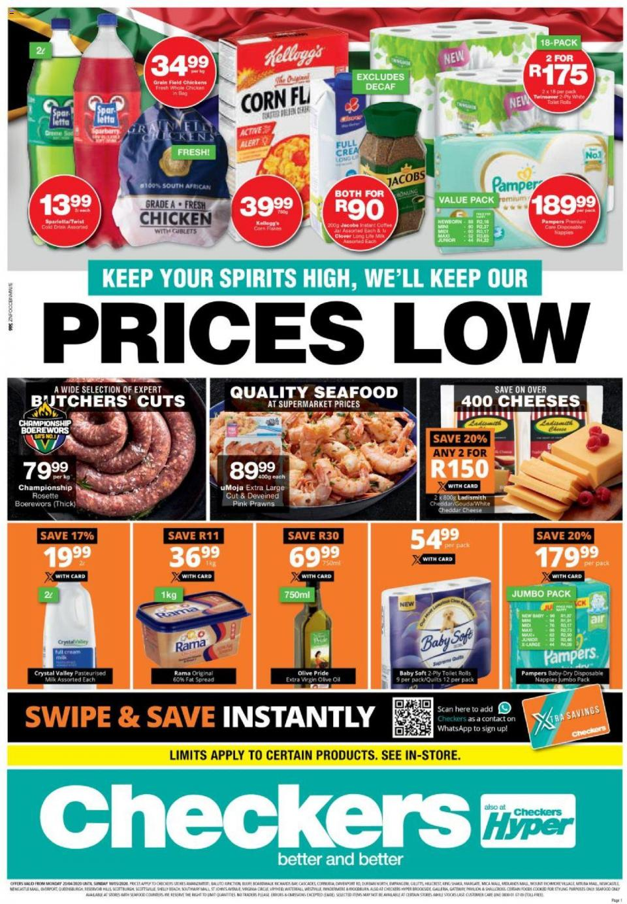

Checkers
Checkers is a FMCG retailer owned by Shoprite that operates in Southern Africa. Checkers currently has 37 Checkers Hypers and 202 Checkers supermarkets operating in Botswana, South Africa and Namibia.The Checkers brand is defined by convenience, quality and freshness. Checkers markets to affluent consumers in search of a world-class shopping experience by offering great value on a wide selection of groceries, as well as household and lifestyle products.
